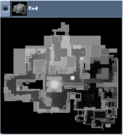
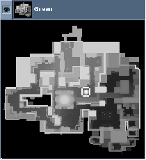
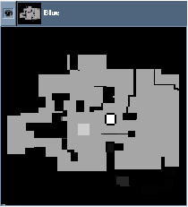
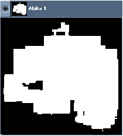

© 2003 Splash Damage, Ltd. All Rights Reserved.

| Wolfenstein: Enemy Territory Documentation © 2003 Splash Damage, Ltd. All Rights Reserved. |
|
The '\generateTracemap' command stores information in all of the different channels:
| Red: | Top down mask (height map) of the ground surface of the upper level of the map. (A very good temporary image for the command map as it shows most map details) |
| Green: | Top down ground mask from the perspective of the sky |
| Blue: | Sky mask (The height of the sky brush from the ground) |
| Alpha: | Map brushwork present "yes/no" mask. (Physical map space) |
Each channel uses all the values from 0-255 in the palette and some channel images may appear to be blank. If you adjust the gamma of the image then you will see more detail.
|  |  |
|  |  |
If you have any thin roofs in your map, or thin walls outside, due to the resolution of the tracemap some rain or snow might fall through it. To counter this, open the tga and go to the green channel (this is the floor height the code uses). Select the area that's leaking and make it slightly brighter (if you have a pixel with brightness 130, make it 131). If it goes through walls, likely you need to put an extra pixel on the other side of the wall to fake an obstructing object there.